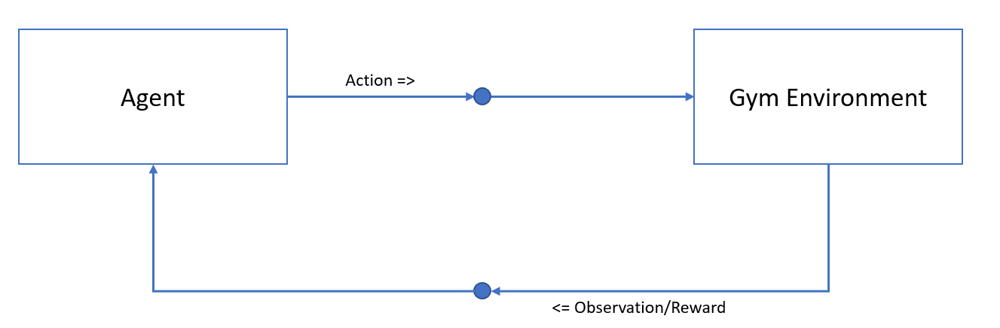
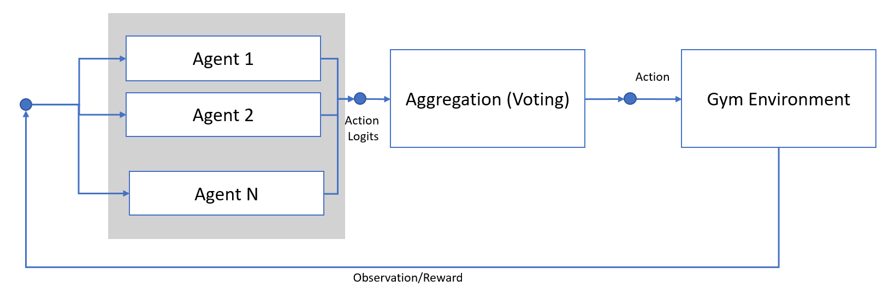
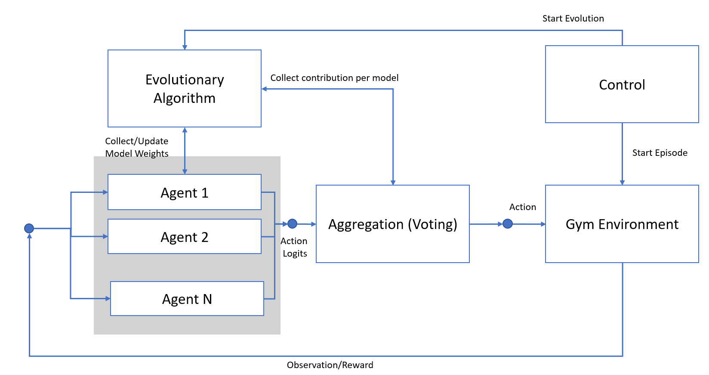

Introduction
In this example, we will train an agent to act within an OpenAI Gym environment.
Specifically, we will focus on one of the classic control problems: the cart pole. The cart pole is an environment in which a pole is attached to a cart that moves along a frictionless track. The goal is to balance the pole by applying forces in the left and right direction on the cart. The agent’s task is to balance the pole as long as possible.

In this example, our agent will control the direction of the cart while receiving observations about the cart and the pole’s position. The environment rewards the agent +1 for every step the pole remains upright.
It is typical to train such an agent using reinforcement learning (RL) techniques, where the agent uses the rewards received from the environment to determine the optimal actions in a given situation. There are various RL algorithms to choose from, and in this example, we will train an Advantage Actor Critic (A2C) agent using the implementation from the stable-baselines3 package.
As swergio is designed to facilitate communication between separate components, we will also divide this example into two parts: the agent component and the environment component. The environment will send the current observations to the agent, which will then predict the next best action and send it back to the environment for evaluation. The environment will then provide feedback in the form of a reward to the agent.
This setup is straightforward; the agent interacts with the environment through actions and learns from the results. However, training a single agent can take a significant amount of time. To speed up the process, it is common to train multiple agents simultaneously.
This approach has the drawback that each agent must act independently in the environment, which works well in a simulated environment like ours, but may not be practical in real-world scenarios. To address this, we will implement a mechanism that collects the proposed actions from each agent and aggregates them into a single action to perform in the environment. This way, the agents will work together to achieve the desired outcome
With this setup, some agents’ proposed actions will be chosen more frequently than others. We can use this information to improve the models of these agents by focusing on the agents that contribute more to the final action.
Our approach is to keep these models and produce new, similar agents. To achieve this, we will apply an evolutionary algorithm to select the best models, then mate and mutate them to generate a new set of agents.
This step will take place after the agents have performed multiple steps in the environment. To facilitate this process, we will add a new component that tracks the contribution of each agent to the final action, and after generating new models, update each agent component.
In the final setup, we will also add a component to send specific commands such as starting episodes in the environment and executing evolutionary steps.
This example illustrates how swergio can be utilized in a reinforcement learning setup, facilitating communication between agents and the environment, and allowing for easy extension with new functionality and components.
It is worth noting that this setup can be applied to other RL problems and other Gym environments, but some adjustments to the input parameters related to action and observation spaces would be required.
In the following sections, we will examine each component in more detail.